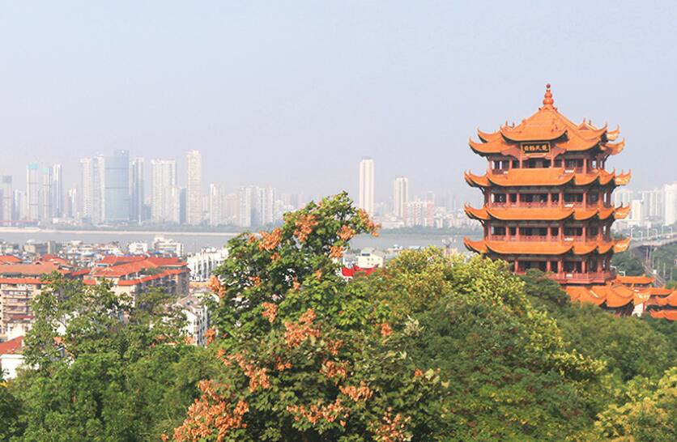
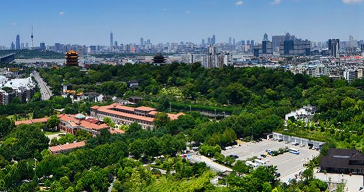
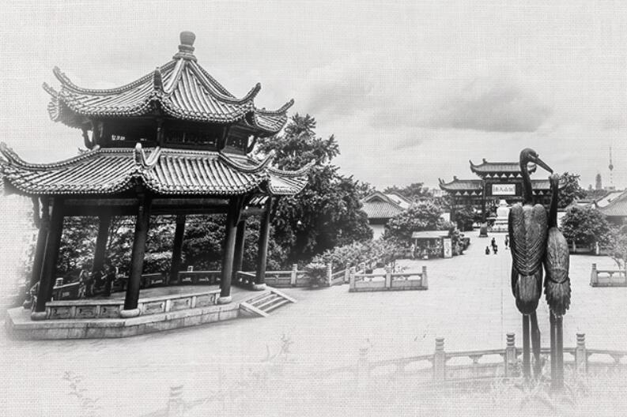

名称由来
关于黄鹤楼的得名，有“因山”、“因仙”两种说法。 “因仙”之说又分有二。一说是曾有仙人驾鹤经此，遂此得名。一说是曾有道士在此地辛氏酒店的墙上画了一只会跳舞的黄鹤，店家生意因此大为兴隆。十年后道士重来，用笛声招下黄鹤，乘鹤飞去，辛氏遂出资建楼。这些神话传说很有趣，也很动人，但都不是黄鹤楼楼名真正的由来。历代的考证都认为，黄鹤楼的名字是因为它建在黄鹄山上而取的。古代的“鹄” 与“鹤”二字一音之转，互为通用，故名为“黄鹤楼”。
因山得名的说法为黄鹤楼得名奠定了地理学基石，因仙得名的说法却令赏楼者插 上了纵横八极的想象翅膀，满足了人们的求美情志和精神超越需求。两种说法各 具功能，以往并行不悖，相得益彰，今后必将彼此映照，共存于永久。
|  |  |  |
|---|
黄鹤楼概况
巍峨耸立于武昌蛇山的黄鹤楼，享有“天下绝景”的盛誉，与湖南岳阳楼，江西滕王阁并称为“江南三大名楼”。黄鹤楼始建于三国时期吴黄武二年（公元223年），传说是为了军事目的而建，孙权为实现“以武治国而昌”（“武昌”的名称由来于此），筑城为守，建楼以嘹望。至唐朝，其军事性质逐渐演变为著名的名胜景点，历代文人墨客到此游览，留下不少脍炙人口的诗篇。唐代诗人崔颢一首“昔人已乘黄鹤去，此地空余黄鹤楼。黄鹤一去不复返，白云千载空悠悠。晴川历历汉阳树，芳草萋萋鹦鹉洲。日暮乡关何处是，烟波江上使人愁。”已成为千古绝唱，更使黄鹤楼名声大噪。至唐永泰元年（公元765年）黄鹤楼已具规模，使不少江夏名士“游必于是，宴必于是”。然而兵火频繁，黄鹤楼屡建屡废。最后一座“清楼”建于同治七年（公元1868年），毁于光绪十年（公元1884年），此后近百年未曾重修。 1981年10月，黄鹤楼重修工程破土开工，1985年6月落成，主楼以清同治楼为蓝本，但更高大雄伟。运用现代建筑技术施工，钢筋混凝土框架仿木结构。飞檐五层，攒尖楼顶，金色琉璃瓦屋面，通高51.4米，底层边宽30米，顶层边宽18米，全楼各层布置有大型壁画、楹联、文物等。楼外铸铜黄鹤造型、胜像宝塔、牌坊、轩廊、亭阁等一批辅助建筑，将主楼烘托得更加壮丽。登楼远眺，“极目楚天舒”，不尽长江滚滚来，三镇风光尽收眼底。黄鹤楼的形制自创建以来，各朝皆不相同，但都显得高古雄浑，极富个性。与岳阳楼、滕王阁相比，黄鹤楼的平面设计为四边套八边形，谓之“四面八方”。这些数字透露出古建筑文化中数目的象征和伦理表意功能。从楼的纵向看各层排檐与楼名直接有关，形如黄鹤，展翅欲飞。整座楼的雄浑之中又不失精巧，富于变化的韵味和美感。
黄鹤楼震撼宣传片▼
进一步了解黄鹤楼
黄鹤楼公园位于武汉市武昌区蛇山之上，东起大东门，西至武汉长江大桥桥头堡，北临京广线，南靠武珞路和武汉长江大桥引桥。龟蛇两山隔江相对，武昌长江大桥一桥飞架南北。蛇山西半段为黄鹤楼公园的收费区域，东半段为免费开放区域。整个蛇山面积为40.3公顷，绿化面积35.6公顷，全园绿化率为88.34%。 蛇山历史悠久，自东吴建武昌城以来一直是政治经济活动的繁盛区域，蛇山见证了中华文化千年的发展，诸多朝代的兴衰更迭，特别是近现代以来的洋务运动，辛亥革命，抗日战争和新中国的诞生，现留有很多近现代的历史遗迹遗存遍布其上。由于特殊的地理位置和历史原因，蛇山身处城市的核心区域，却又避开了城市建设扩张时的人为改变，比较完好的保存了自然植物群落，保留了大量近代的自然林木资源。因武汉长江大桥改建，黄鹤楼由蛇山黄鹄矶改迁到现址新建的黄鹤楼；因避开近代城市扩建改造保留了大量的古树名木；张之洞修建抱冰堂时在门前种下了从外国带回来的武汉市第一棵法国梧桐，当年在抱冰堂四周种下的树木现已长成参天古树，整个蛇山现有古树名木41株，其中一级古树美1株，二级古树名木40株。
黄鹤楼景区视频▼
黄鹤楼主要资源
主要园林景点：鹅池，诗碑廊及落梅轩：以江南园林的形制打造的庭院式园林布局，结合山、水、廊、亭、阁的分层布局，展现黄鹤楼历代文人作品，诗词碑刻，歌舞曲艺的文化区域。百松园，梅园，杜鹃园：三园处于西区山北，相互衔接，有共称“百松千梅万杜鹃”，连接主楼与岳飞广场。是山北自然式园林景观的核心游览主题，梅园与落梅轩均出于李白的诗句：“黄鹤楼上吹玉笛，江城五月落梅花”，值得一提的是武汉市江城别名的由来也是出自这句诗。 紫薇园：紫薇是黄鹤楼公园的园花，紫薇园是今年我园新建的特色区域。以紫薇为造园的核心主题，收集了各式各样的紫薇造型和各类不同品种。涵盖了紫薇这种经典园林植物在造园中的各种运用方式。园内收集了紫薇四大类：紫薇、银薇、翠薇、赤薇及其下的不同品种。以及紫薇在造园中不同手法的运用方式，如，紫薇盆景，紫薇古桩，紫薇扎景，紫薇篱笆，紫薇屏风，紫薇扎字，紫薇拼接合栽，紫薇嫁接一树多花，矮生紫薇等等。